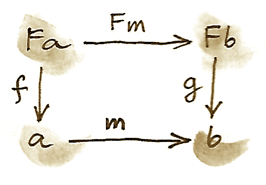
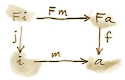
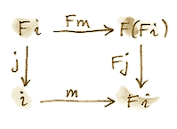
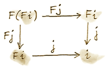
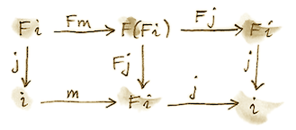
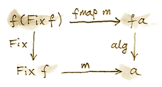
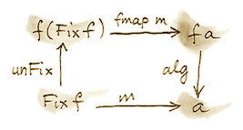
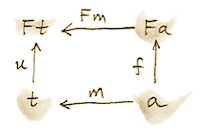

我们已经见过幺半群的多种表述：集合、单对象范畴、幺半范畴中的对象。这个简单概念还能挤出多少内容？
取集合 m 及两个函数：
η:1→m
1 是 Set 的终对象——单元素集。第一个函数定义乘法，第二个从 m 中选出单位元。并非所有这样的函数对都构成幺半群，还需结合律与单位律；先暂时忘掉这些定律，只考虑“潜在幺半群”。函数对是两个函数集合笛卡尔积的元素，而函数集合可表示为指数对象：
η∈m1
二者的积是 mm×m×m1。使用在任何笛卡尔闭范畴都成立的高中代数，可改写为 mm×m+1。其中 + 是 Set 中余积。于是函数对被一个函数替代：
这个函数集合的任意元素都是潜在幺半群。
这种表述的美在于容易推广。群是增加了“为每个元素指定逆元”的一元函数 m→m 的幺半群。例如整数在加法下构成群，零是单位元，取负给出逆元。定义群从三个函数开始：
m→m
1→m
同样可合并成一个函数 m×m+m+1→m。这对应一个二元运算、一个一元运算与一个零元运算。具有该签名的函数都是潜在群。
可以继续：定义环时再加入一个二元运算与一个零元运算。每次都会得到左边是幂之和（可含零次幂即终对象）、右边是集合自身的函数类型。
现在大胆推广：用对象替代集合、态射替代函数，用 n 元积出发的态射定义 n 元运算。这需要支持有限积、为零元运算提供终对象的笛卡尔范畴；合并运算还需要指数，即笛卡尔闭范畴；最后需要余积。
或者忘掉推导过程，只关注最终形式。态射左边的积之和定义一个自函子。若换成任意自函子 F，便无需对范畴施加上述限制；得到的就是 F-代数（F-algebra）。
F-代数是三元组：自函子 F、对象 a、态射 Fa→a。对象常称为载体（carrier）、底层对象；编程中是载体类型。态射称为求值函数（evaluation function）或结构映射（structure map）。可把 F 想成形成表达式，把态射想成求值表达式。
type Algebra f a = f a -> aHaskell 直接用求值函数标识代数。幺半群例子的函子是：
data MonF a = MEmpty | MAppend a a它表示 1+a×a。环可写成：
data RingF a = RZero
| ROne
| RAdd a a
| RMul a a
| RNeg a对应 1+1+a×a+a×a+a。整数是一种环，可选 Integer 为载体：
evalZ :: Algebra RingF Integer
evalZ RZero = 0
evalZ ROne = 1
evalZ (RAdd m n) = m + n
evalZ (RMul m n) = m * n
evalZ (RNeg n) = -n同一个 RingF 上还有其他 F-代数，如多项式环和方阵环。函子的角色是生成由代数求值器处理的表达式。此前表达式很简单，而更复杂的表达式通常需要递归。
递归
生成任意表达式树的一种办法，是把函子定义中的变量 a 换成递归。环中的任意表达式由树状结构生成：
data Expr = RZero
| ROne
| RAdd Expr Expr
| RMul Expr Expr
| RNeg Expr环求值器变成递归版本：
evalZ :: Expr -> Integer
evalZ RZero = 0
evalZ ROne = 1
evalZ (RAdd e1 e2) = evalZ e1 + evalZ e2
evalZ (RMul e1 e2) = evalZ e1 * evalZ e2
evalZ (RNeg e) = -(evalZ e)这仍不实用，因为必须把整数全表示成若干个 1 的和，但临时够用。
怎样用 F-代数语言描述表达式树？要把函子定义中的自由类型变量递归替换为替换结果。分步想象，深度一的树是：
type RingF1 a = RingF (RingF a)也就是用 RingF a 生成的深度零树填入 RingF 的孔。深度二为：
type RingF2 a = RingF (RingF (RingF a))也可写成：
type RingF2 a = RingF (RingF1 a)继续得到符号等式：
type RingF(n+1) a = RingF (RingFn a)概念上无限重复后得到 Expr。注意 Expr 不依赖 a：起点无关紧要，总会到达同一处。任意范畴中的任意自函子未必如此，但 Set 中情况良好。这仍是挥手式论证，稍后会严格化。
无限应用自函子会产生固定点（fixed point）：
直觉是，既然已经无限次应用 f，再应用一次不会改变结果。Haskell 定义为：
newtype Fix f = Fix (f (Fix f))若构造器名称与类型不同，也许更易读：
newtype Fix f = In (f (Fix f))但这里沿用惯例。构造器可看成函数：
Fix :: f (Fix f) -> Fix f也有剥掉一层函子应用的函数：
unFix :: Fix f -> f (Fix f)
unFix (Fix x) = x两者互逆，后面会用到。
F-代数范畴
一个老技巧：每当构造出新对象，就检查它们是否形成范畴。给定自函子 F 的代数确实形成范畴。对象是代数——原范畴 C 中的载体对象 a 与态射 Fa→a 所成的对。
态射要把代数 (a,f) 映到 (b,g)。定义为原范畴中载体间态射 m:a→b，但并非任意态射都行，它必须兼容两个求值器。这样的结构保持态射称为同态（homomorphism）。把 m 提升为 Fm:Fa→Fb，再接 g；或先用 f 到 a，再接 m。要求：

恒等态射可用，同态复合仍是同态，因此确实构成范畴。
F-代数范畴的始对象（若存在）称为初代数（initial algebra）。设载体为 i，求值器为 j:Fi→i。Lambek 定理指出 j 是同构。证明依赖始对象：从它到任意 F-代数存在唯一同态 m，故交换：

构造载体为 Fi 的代数，其求值器需从 F(Fi) 到 Fi；提升 j 即得 Fj。初性给出从 (i,j) 到 (Fi,Fj) 的唯一同态 m：

另有平凡交换图，两条路径完全相同：

它表示 j 是从 (Fi,Fj) 到 (i,j) 的代数同态。拼接两图：

此图说明 j∘m 是代数自同态。由于 (i,j) 初始，从它到自身仅有恒等同态，所以 j∘m=idi。结合左图交换性可证 m∘j=idFi。因此 m 是 j 的逆，j 给出：
这正说明 i 是 F 的固定点，严格证明了此前直觉。
回到 Haskell：i 是 Fix f，j 是构造器 Fix，逆是 unFix。Lambek 定理告诉我们，要得到初代数，就把函子 f 的参数 a 换成 Fix f；也说明固定点为何不依赖 a。
自然数
自然数也可定义为 F-代数，从两支态射开始：
succ:N→N
第一支选零，第二支把数映到后继。合并为 1+N→N。左边定义函子：
data NatF a = ZeroF | SuccF a其固定点（生成的初代数）编码为：
data Nat = Zero | Succ Nat自然数要么是零，要么是另一个自然数的后继，这就是 Peano 表示。
Catamorphism
用 Haskell 重写初性条件。初代数是 Fix f，求值器是构造器 Fix。对同一函子上的任意代数——载体 a、求值器 alg——存在唯一态射 m。

m 正是固定点的求值器，也就是整棵递归表达式树的求值器。下面寻找通用实现。
Lambek 定理说构造器 Fix 是同构，逆为 unFix。反转图中一支箭头：

交换条件是：
m = alg . fmap m . unFix可把它读作 m 的递归定义。对由 f 生成的有限树，递归必终止，因为 fmap m 在 f 的顶层之下，即原树的孩子上工作；孩子总比原树浅一层。
把 m 应用于 Fix f 构造的树时，unFix 剥掉构造器暴露顶层，再对所有子节点应用 m，产生 a 类型结果，最后用非递归求值器 alg 合并。关键是 alg 本身是简单非递归函数。
对任意代数 alg 都能这样做，所以定义高阶函数：以代数为参数，返回 m。它称为折叠态射（catamorphism）：
cata :: Functor f => (f a -> a) -> Fix f -> a
cata alg = alg . fmap (cata alg) . unFix以自然数函子为例：
data NatF a = ZeroF | SuccF a选 (Int,Int) 为载体，定义代数：
fib :: NatF (Int, Int) -> (Int, Int)
fib ZeroF = (1, 1)
fib (SuccF (m, n)) = (n, m + n)其 catamorphism cata fib 计算 Fibonacci 数。一般来说，NatF 的代数定义递推关系——当前元素如何由前一元素得到；catamorphism 求该序列第 n 项。
Fold
e 的列表是下面函子的初代数：
data ListF e a = NilF | ConsF e a把变量 a 换成递归结果 List e 得到：
data List e = Nil | Cons e (List e)列表函子的代数选择载体类型，并定义对两个构造器模式匹配的函数：NilF 的值说明怎样求值空表，ConsF 的值说明怎样把当前元素与此前累积值合并。
计算长度的代数（载体 Int）：
lenAlg :: ListF e Int -> Int
lenAlg (ConsF e n) = n + 1
lenAlg NilF = 0cata lenAlg 确实计算长度。求值器由“接受元素与累加器并返回新累加器”的函数，以及起始值零组成；值和累加器类型由载体给出。比较传统定义：
length = foldr (\e n -> n + 1) 0foldr 的两个参数正是代数的两个分量。再看求和代数：
sumAlg :: ListF Double Double -> Double
sumAlg (ConsF e s) = e + s
sumAlg NilF = 0.0比较：
sum = foldr (\e s -> e + s) 0.0可见 foldr 只是 catamorphism 对列表的方便特化。
余代数
照例有对偶的 F-余代数（F-coalgebra），把态射方向反转：
给定函子的余代数也形成范畴，同态保持余代数结构。其终对象 (t,u) 称终余代数或最终余代数（final coalgebra）。从任意其他余代数 (a,f) 到它都有唯一同态 m，使图交换：

终余代数也是函子固定点，因为 u:t→Ft 是同构（余代数版 Lambek 定理）：Ft≅t。编程中，终余代数通常解释为生成可能无限的数据结构或状态转换系统的配方。
Catamorphism 求值初代数，展开态射（anamorphism）则共同求值终余代数：
ana :: Functor f => (a -> f a) -> a -> Fix f
ana coalg = Fix . fmap (ana coalg) . coalg典型余代数基于固定点为 e 类型无限流的函子：
data StreamF e a = StreamF e a
deriving Functor其固定点：
data Stream e = Stream e (Stream e)StreamF e 的余代数接受 a 类型种子，产生一对（StreamF 只是二元组的华丽名字）：一个元素与下一个种子。很容易生成平方、倒数等无限序列。
更有趣的是产生素数流。技巧是用无限列表作载体，初始种子为 [2..]。下一种子是去掉 2 的所有倍数后的表尾，即从 3 开始的奇数；下一步去掉 3 的倍数，以此类推，这就是 Eratosthenes 筛：
era :: [Int] -> StreamF Int [Int]
era (p : ns) = StreamF p (filter (notdiv p) ns)
where notdiv p n = n `mod` p /= 0该余代数的 anamorphism 生成素数：
primes = ana era [2..]流是无限列表，应该能转成 Haskell 列表。可用同一 StreamF 形成代数并运行 catamorphism：
toListC :: Fix (StreamF e) -> [e]
toListC = cata al
where al :: StreamF e [e] -> [e]
al (StreamF e a) = e : a这里同一固定点同时是同一自函子的初代数与终余代数。任意范畴中未必如此；自函子可能有多个或没有固定点。初代数是最小固定点，终余代数是最大固定点。Haskell 中二者由同一公式定义并重合。
列表的 anamorphism 称为 unfold。为创建有限列表，函子改为产生 Maybe 二元组：
unfoldr :: (b -> Maybe (a, b)) -> b -> [a]Nothing 终止列表生成。
与 Lens 相关的余代数很有趣。Lens 可表示为 getter/setter 对：
set :: a -> s -> a
get :: a -> sa 通常是带 s 类型字段的积数据类型；getter 取字段，setter 替换字段并返回新 a。两个函数可合并为：
a -> (s, s -> a)进一步写成：
a -> Store s a其中函子：
data Store s a = Store (s -> a) s它不是简单的积之和代数函子，而含指数 as。Lens 是该函子上载体为 a 的余代数。此前看到 Store s 也是 Comonad；行为良好的 Lens 对应与 Comonad 结构兼容的余代数，下一章继续讨论。
习题
- 实现一元多项式环的求值函数；多项式用按 x 次幂从低到高排列的系数列表表示，例如 4x²-1 为
[-1,0,4]。点击展开参考答案
type Poly = [Integer] add p q = zipWith (+) (p ++ repeat 0) (q ++ repeat 0) mul p q = [sum [p!!i * q!!(n-i) | i <- [0..n], i < length p, n-i < length q] | n <- [0 .. length p + length q - 2]] evalP :: Algebra RingF Poly evalP RZero=[]; evalP ROne=[1] evalP (RAdd p q)=take (max (length p) (length q)) (add p q) evalP (RMul p q)=mul p q evalP (RNeg p)=map negate p - 推广到多个独立变量，如 x²y-3y³z。
点击展开参考答案
用指数向量表示单项式，例如三变量中 x²y 为
[2,1,0]，y³z 为[0,3,1]；多项式用“指数向量到系数”的有限映射表示。加法合并相同键并相加系数，乘法对每对单项式把指数向量逐项相加、系数相乘，再合并相同键；取负逐项取负，零为空映射，一为[0,0,0]↦1。这直接给出RingF Poly→Poly。 - 实现 2×2 矩阵环的代数。
点击展开参考答案
data M2 = M2 Integer Integer Integer Integer evalM :: Algebra RingF M2 evalM RZero = M2 0 0 0 0 evalM ROne = M2 1 0 0 1 evalM (RAdd (M2 a b c d) (M2 e f g h)) = M2 (a+e) (b+f) (c+g) (d+h) evalM (RMul (M2 a b c d) (M2 e f g h)) = M2 (a*e+b*g) (a*f+b*h) (c*e+d*g) (c*f+d*h) evalM (RNeg (M2 a b c d)) = M2 (-a) (-b) (-c) (-d) - 定义一个 anamorphism 会产生自然数平方列表的余代数。
点击展开参考答案
squares :: Int -> StreamF Int Int squares n = StreamF (n*n) (n+1) squareStream = ana squares 0 - 用
unfoldr生成前 n 个素数。点击展开参考答案
firstPrimes :: Int -> [Int] firstPrimes n = unfoldr step (n, [2..]) where step (0, _) = Nothing step (k, p : ns) = Just (p, (k-1, filter (\x -> x `mod` p /= 0) ns))